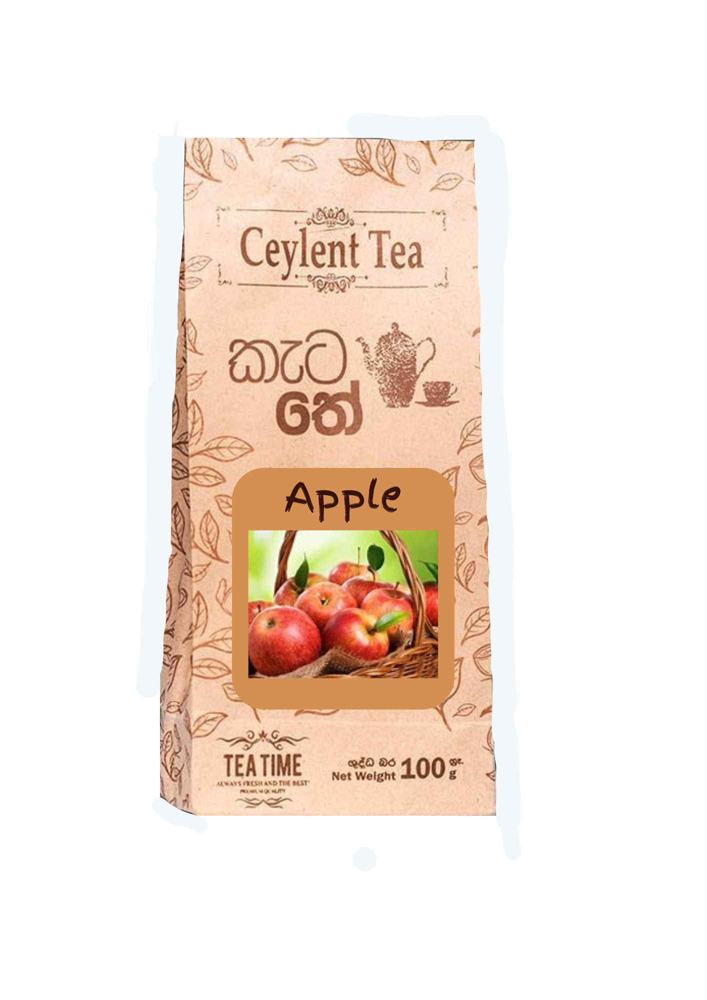
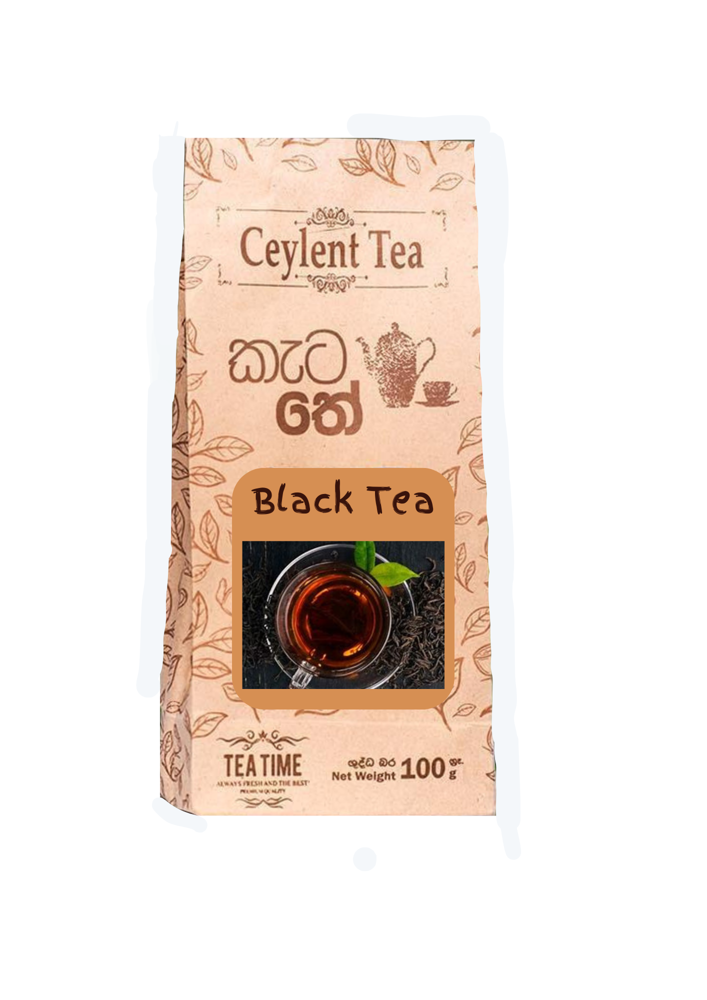
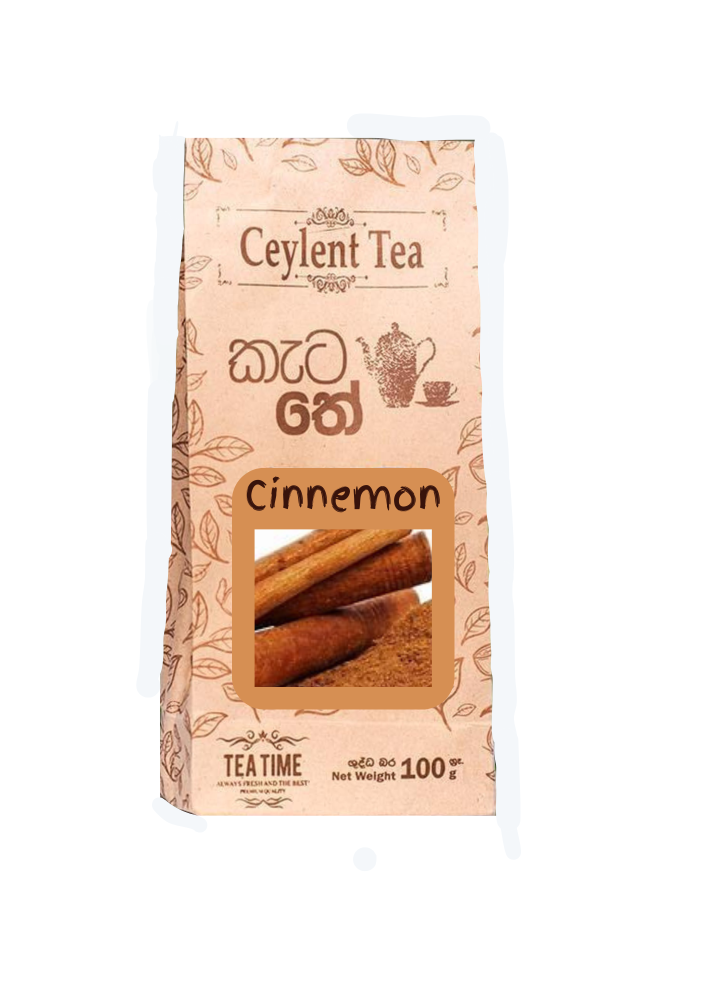
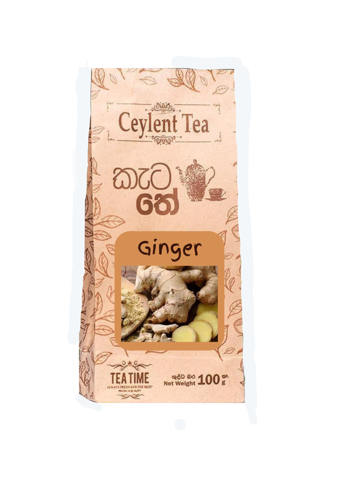
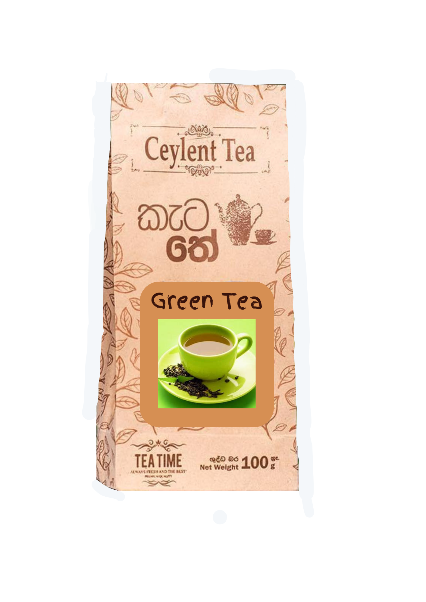
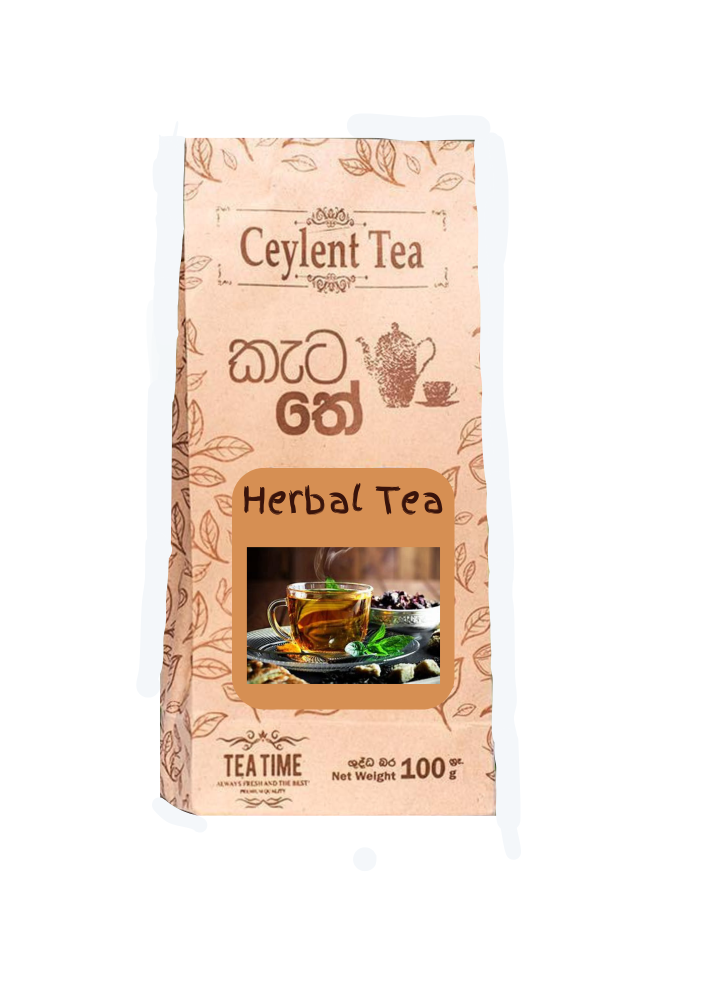

Home to the mythical mountains that brithed the saga of Ceylon Tea, Sri Lanka is renowned for traditional,high-quality tea enjpyed by connoisseurs
the world over.
Browse through an exciting range of Black, Green and Flavoured Teas as well as our newest additional, Oolong Tea from China.
From frothy, spicy chai to rejuvenating and relaxing green tea, tea is loved all across the world in its various forms. While there are a seemingly
endless amount of tea types, there are only five main brews of tea – black tea, white tea, green tea, oolong tea, and pu’erh. Despite their many names
and unique flavours, all tea is made from the leaves of the Camellia Sinensis tea bush. What sets each brew apart from one another is the length of
time the tea leaves are oxidised for.
Tea is truly remarkable. It began as a medicinal herbal beverage exclusively consumed by Chinese royalty, but has transformed into a thriving industry
and tea is now the second most popular beverage in the world – second only to water!
Whether you’re a tea connoisseur or you just enjoy a cuppa with your breakfast, tea has the extraordinary ability to make everything seem a bit better.
Here are four of the world’s most beloved teas.